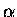

GSTAMP can be used to display the structurally equivalences found by
STAMP. It works by creating an input file for MOLSCRIPT [18]
(contact Per Kraulis to obtain a copy).
As for DSTAMP, a detailed description of parameters is given later. Here
is a quick example, using the first globin alignment (i.e. containing only
two structures).
First one needs to generate transformed PDB coordinates using the program
TRANSFORM:
transform -f globin.5.clean
This will create 2 PDB files with coordinates superimposed: 2hhbb.pdb and 2hhba.pdb.
gstamp -f globin.5.clean
This reads in the six structures and the alignment and outputs six
molscript files called (domain identifier).molscript.
One must then run molscript on each of these files that one wants to display. For illustration,
we will run two very distantly related globins:
molscript < 1lh1.molscript > 1lh1.ps molscript < 2hhba.molscript > 2hhba.ps
To give the two postscript files are shown in Figure 2.
Figure 2 Superimpositions of globin 1lh1 (left) and 2hhba (right).
By default, GSTAMP will show equivalent helix, strand and coil residues as MOLSCRIPT 